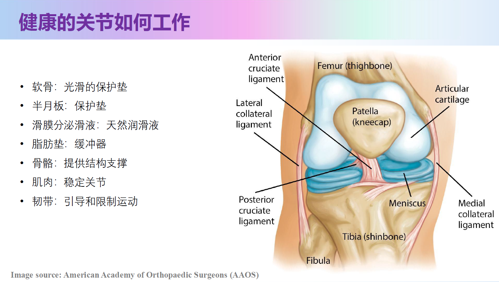
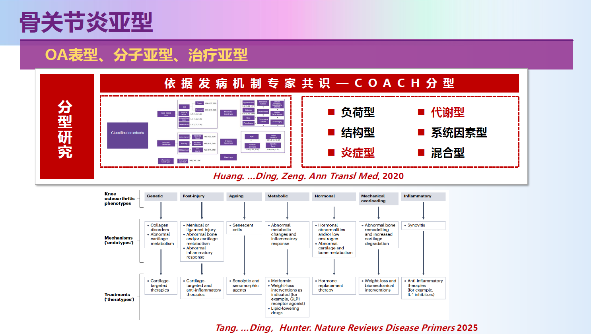
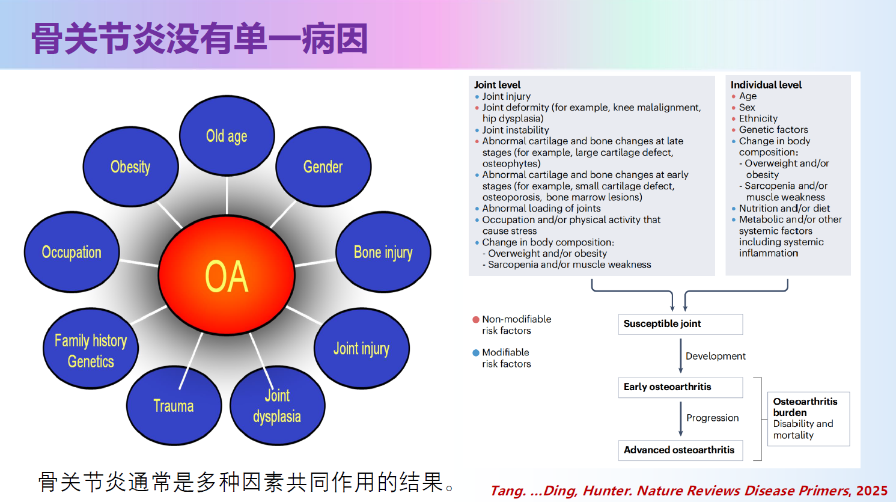
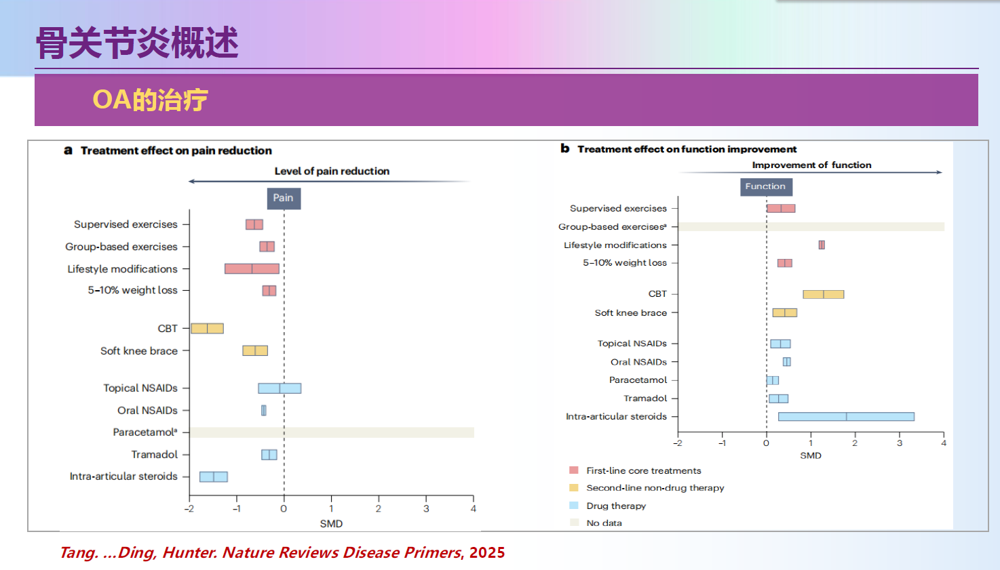
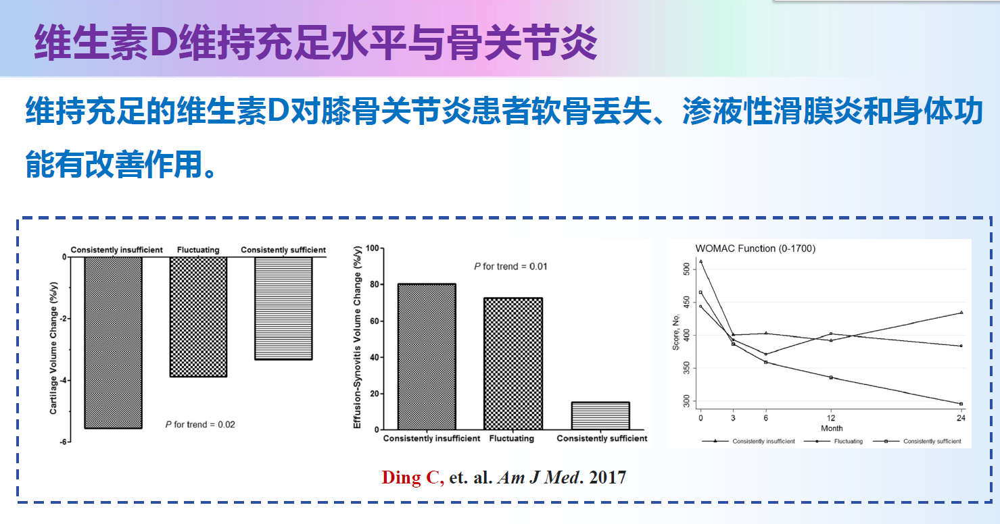
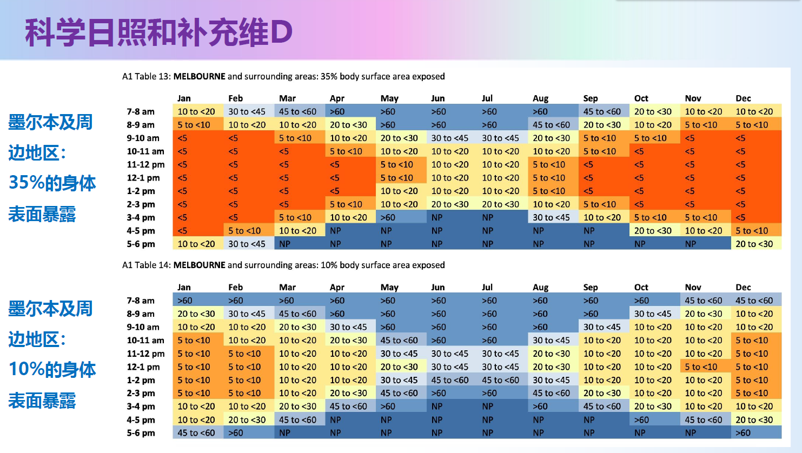

骨关节炎（Osteoarthritis, OA）是否只是岁月留下的单纯“机械性磨损”？盲目推崇的“日行万步”对关节软骨退变是保护因素还是危险因素？在改善关节预后方面，广泛应用的维生素D补充剂究竟缺乏循证医学支持，还是具有确切的临床获益？
面对全球老龄化趋势，骨关节炎已成为最普遍的慢性肌肉骨骼系统退行性疾病之一，也是导致中老年人关节疼痛、活动受限和生活质量下降的重要原因。在“健康老龄化”的战略背景下，针对骨关节炎的早期预防与全病程规范化干预，已成为社会和家庭共同关注的健康议题。
8月26日晚，墨尔本中国高校校友会联盟（MCUAA）依托线上平台成功举办了题为“骨关节的健康管理——维生素D补充有效吗？”的专题医学讲座。本次讲座特邀国际骨关节炎研究领域知名专家丁长海教授主讲。丁教授结合国际最新临床研究成果和其团队二十余年的临床科研沉淀，从骨关节炎的科学认识、危险因素、运动干预、体重管理，到维生素D缺乏与补充的最新国际共识，层层展开，帮助大家建立一套科学、系统、可操作的骨关节健康管理理念。
一位深耕骨关节炎领域的国际学者
讲座开始前，墨尔本中国高校校友会联盟（MCUAA）主席范志良博士向与会听众隆重介绍了本期主讲嘉宾。丁长海教授现任清华大学生物医学工程学院长聘教授、北京清华长庚医院临床研究中心主任，同时担任澳大利亚塔斯马尼亚大学荣誉教授、兼职教授。丁教授曾获得澳大利亚政府ARC Future Fellowship（2011年）和NHMRC Career Development Fellowship（2008年）等重要科研资助，并入选中国国家特聘专家、“珠江人才计划”科技创新领军人才、广东省医学领军人才等国家和省级高层次人才计划。目前，他还担任广东省临床研究质量控制中心秘书长、广东省医疗卫生机构临床研究专家委员会主任委员、广州市临床研究质量控制中心执行主任，以及国际骨关节炎研究协会（OARSI）研究与培训委员会主任委员、OARSI中国大使等多个重要学术职务。
作为国际骨关节炎研究领域的重要学术带头人，丁教授担任《Osteoarthritis and Cartilage》《Arthritis Research & Therapy》等国际权威医学期刊编委，迄今已发表SCI论文390余篇，累计被引用超过2.1万次，H指数达到78，连续多年入选爱思唯尔“中国高被引学者”榜单，并跻身全球前2%顶尖科学家行列。国际学术评价机构Expertscape更将其评为全球骨关节炎研究领域前0.05%的顶尖专家。此外，丁教授还主编了《研究者发起的临床研究研究者手册》（人民卫生出版社），长期推动临床研究规范化建设，在医学科研和临床转化领域具有广泛影响力。
骨关节炎：不只是“磨损”那么简单
讲座伊始，丁教授便纠正了公众对骨关节炎的一个常见误解——许多人以为骨关节炎不过是关节“用旧了”的自然磨损，但医学定义远比这复杂。骨关节炎是一种影响整个关节的慢性疾病，涉及软骨逐渐变薄、骨结构重塑、滑膜炎症、髌骨下脂肪垫纤维化、周围肌肉减弱等一系列结构和功能的连锁变化。丁教授用了一个生动的“自行车轮胎”类比：外胎相当于关节软骨，直接承受压力与摩擦；内胎相当于滑膜和关节液，起到润滑和缓冲作用；胎圈钢丝好比韧带，维系关节稳定；而金属轮圈则如同软骨下骨，提供深层支撑。轮胎老化后外胎磨损、内胎漏气、钢丝松弛、轮圈变形，恰如膝关节因老化劳损而出现软骨磨损、滑膜积液、韧带松弛，最终引发疼痛与活动受限。

数据显示，膝关节是骨关节炎最常见的受累部位，40岁以上人群患病率高达43%，手关节的影像学患病率甚至可达21%至92%，其余依次为腕关节、肩关节、脊柱、颞下颌关节及髋关节。临床上，骨关节炎的诊断主要依据年龄、持续性关节疼痛、晨僵时间短（不超过30分钟）、关节活动受限及骨性肥大等症状体征，并可结合X光片的Kellgren-Lawrence分级（0至4级，依据关节间隙狭窄与骨赘程度评估）及MRI检查（可发现软骨缺损、半月板撕裂、骨髓损害等更早期病变）加以确诊。丁教授还特别介绍了团队近期提出的“COACH”骨关节炎亚型分型框架，将疾病细分为负荷型、结构型、炎症型、代谢型、系统因素型及混合型，为未来的精准治疗提供了理论基础。

危险因素：有的无法改变，有的可以主动干预
在病因探讨环节，丁教授强调骨关节炎从来不是单一因素所致，而是年龄、性别、遗传、机械负荷、体重、肌肉状态、代谢炎症等多重因素叠加作用的结果。其中年龄增长、生物学性别、遗传背景、绝经相关变化等属于难以人为干预的因素；而机械负荷、体重体脂、关节损伤、活动强度、肌肉力量、慢性低度炎症、代谢性疾病等则是可以通过生活方式加以改善的。

丁教授团队的多项原创研究为此提供了扎实证据：肥胖与更高的软骨缺损及骨关节炎发生率密切相关，甚至儿童期超重也会显著增加25年后成年膝关节疼痛的风险；肌肉力量不足与肌少症则分别与软骨改变和关节疼痛加重相关联。特别值得关注的是“步行负荷”的双面性——研究发现，每日步数达到或超过10000步的人群，骨髓损伤进展风险升高97%，而这种负面效应在基线已存在重度半月板损伤或骨髓损伤的人群中尤为明显；但对于女性、肥胖及既往存在关节损伤的人群，适度步行（每日7500至9999步）反而有助于延缓骨赘进展，显示出运动负荷需要“因人而异”地把握尺度，而非简单的“越多越好”或“越少越好”。此外，吸烟也被证实会加速膝关节软骨流失，这一效应在存在膝骨关节炎家族史的人群中更为显著。
治疗策略：从健康教育到关节置换的阶梯式管理
针对早期、中期及晚期骨关节炎，丁教授分别介绍了循序渐进的治疗方案。他特别指出，健康教育本身就是一种治疗手段，正确认识疾病有助于患者减少恐惧、保持活动、制定合理预期、避免无效治疗。对于早期患者，运动干预（如步行、骑自行车、游泳、太极、肌力与平衡训练）与体重管理（建议降低体重5%至10%，同时减脂增肌）被列为最关键的措施。团队的Meta分析显示，运动组在疼痛缓解方面显著优于对照组，其中局部运动配合肌力训练、柔韧性训练与水中运动的综合方案效果最佳；针对肥胖骨关节炎患者，适度步行同样能带来关节结构与功能的双重获益。有趣的是，团队另一项研究比较了瑜伽与传统肌力训练的疗效，发现瑜伽在12周时的镇痛效果不劣于肌力训练，而在24周时甚至在关节症状、功能、生活质量及抑郁情绪改善方面展现出一定优势。

进入中期后，患者可考虑外用及口服止痛药、抗炎药物、支具、理疗，以及玻璃酸钠、富血小板血浆或间充质干细胞等关节腔注射疗法，必要时采用截骨矫形或关节镜微创治疗；而当疼痛严重持续、功能明显受限且保守治疗效果不佳时，全膝关节置换手术则是晚期患者恢复生活质量的最终选择。特别指出的是，富血小板血浆或间充质干细胞以及氨基葡萄糖、软骨素等的疗效还不确切，多数国际指南的推荐等级较低。处方级结晶型硫酸氨基葡萄糖在多项大型临床试验及Meta分析中被证实是目前唯一能够稳定改善患者长期疾病病情和进展的药物，在2019年欧洲骨关节炎与骨质疏松症临床与经济学会（ESCEO）的膝骨关节炎阶梯管理指南中被列为一线基础治疗的推荐用药。
维生素D与骨关节炎：补还是不补？
讲座的第二大主题聚焦于公众普遍关心的维生素D话题。丁教授介绍，维生素D主要通过阳光照射皮肤合成，也可从富含脂肪的鱼类、蛋黄及强化食品中获取，其核心功能包括促进钙吸收、维护骨骼健康、支持肌肉功能与平衡能力。目前全球约有10亿人存在维生素D缺乏，约半数人口处于维生素D不足状态，血清25-羟基维生素D水平低于20 ng/mL即被定义为缺乏，并已被证实与癌症、糖尿病、心血管疾病、全因死亡率升高等多种不良健康结局相关。
那么，补充维生素D对骨关节炎究竟是否有效？丁教授团队围绕这一问题开展了长达十余年的系列研究，结论颇具启发性、也颇为审慎：一方面，队列研究证实较低的血清维生素D水平能够预测两年后更明显的软骨损失，以及五年后更严重的关节疼痛；但另一方面，团队主导的大型随机对照试验VIDEO研究显示，为期两年的维生素D补充对膝骨关节炎患者的软骨体积丢失和WOMAC疼痛评分并无显著改善，不过在WOMAC功能评分、骨髓损伤及OMERACT-OARSI综合评分等方面确实观察到一定获益。后续的事后分析进一步揭示，维生素D补充对关节腔积液性滑膜炎和抑郁症状的改善尤为明显，尤其是在基线本就存在积液或抑郁症状的患者群体中效果更突出。团队近期发表的分层分析还提出了一个颇具临床指导意义的“分水岭”：当基线25-羟基维生素D水平低于或等于43 nmol/L时，补充维生素D主要有助于缓解症状；而当基线水平高于43 nmol/L时，补充则更多体现出对软骨的保护作用。这意味着，维生素D补充的效果并非“一刀切”，而应结合个体基线水平区别对待。

科学晒太阳：因肤色而异的实用建议
考虑到听众多为居住在墨尔本的中国高校校友，丁教授特别引用了澳大利亚辐射防护和核安全局（ARPANSA）的权威指南，依据“菲茨帕特里克皮肤分型”（从苍白易晒伤的1型到深棕色不易晒伤的6型）给出了差异化建议。对于皮肤癌高风险的浅肤色人群（I、II型），建议在紫外线指数达到3以上时坚持每日涂抹防晒霜、做好遮阳防护，且不应为获取维生素D而刻意延长日晒时间，如有需要应咨询医生进行营养补充。对占华人群体绝大多数的中等风险肤色（III、IV型），在排除皮肤癌家族史等高危因素的前提下，建议通过适度、适时的户外暴露来自然合成维生素D。但若面临长时间户外活动且紫外线指数≥3的环境，仍需采取全面的综合光防护措施（包括遮阳伞、防晒衣帽、太阳镜及涂抹防晒霜）。丁教授还展示了以悉尼、墨尔本为例、按月份和时段细化到分钟的日照时长建议表，为听众提供了极具操作性的参考依据。

互动交流：科学认知，健康同行
讲座结束后，在MCUAA理事、天津大学墨尔本校友会会长刘莘的主持下，现场进入热烈的互动交流环节。校友们围绕自身关心的骨关节健康问题踊跃提问，讨论气氛十分活跃。互动话题涵盖了羽毛球等运动对膝关节健康的影响、关节软骨为何难以再生的科学机制、如何通过调整运动方式和加强肌肉训练来保护关节、游泳与水中运动等低冲击运动在骨关节炎康复中的积极作用，以及合理补充钙剂与维生素D，以更好地维护骨骼健康、降低骨质疏松风险。丁长海教授结合最新医学研究成果和丰富的临床科研经验，逐一进行了深入细致、通俗易懂的解答。
整场讲座内容丰富、逻辑严谨、层层递进。从重新认识骨关节炎这一慢性疾病的本质，到系统梳理可干预与不可干预的危险因素；从科学解读运动、体重管理和药物治疗等综合管理策略，到回应公众高度关注的维生素D补充是否有效这一热点问题，丁长海教授始终坚持循证医学理念，将国际最新研究成果转化为通俗易懂、贴近生活的健康知识，为大家提供了切实可行的骨关节健康管理建议。
MCUAA将继续致力于为墨尔本中国高校校友打造高质量学习与交流平台，围绕科技前沿、教育发展、职业规划、人文素养及健康生活等主题推出更多系列讲座，助力校友持续学习、共同成长，共建更加健康、更有活力、更具凝聚力的MCUAA社区。
文字：范志良